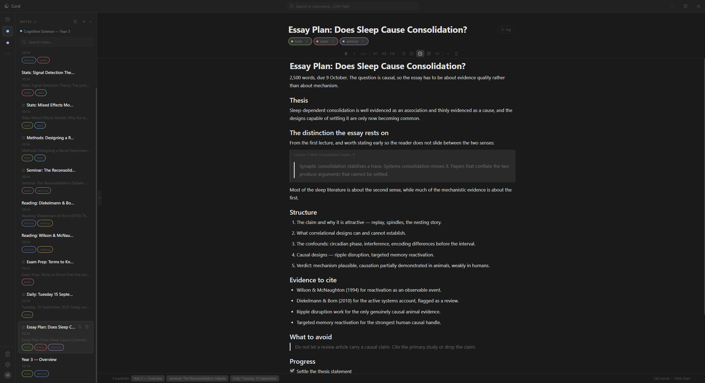
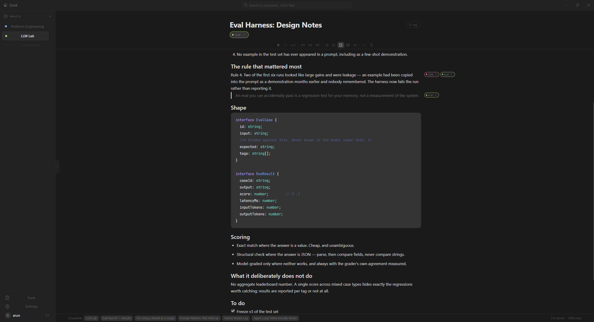
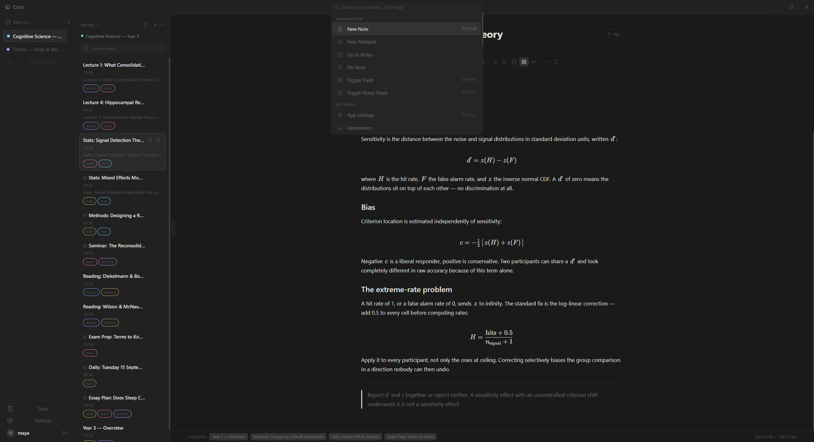

cord-note
Notes that know
how they connect.
Cord is a local-first desktop note-taking app. Vaults, notes, links and tags — a knowledge graph, not a filing cabinet. Your notes live in a SQLite database on your own machine. There is no account and nothing to sign in to.
Windows, macOS and Linux · AGPL-3.0

What it is
Local first, and local only.
Every note is a row in a SQLite database in your own user directory. Cord works with the network cable pulled out, because it never needed it. There is no account, no sync service and no telemetry.
Notes link to each other with [[wiki links]], and every
link is visible from both ends. Tags and vaults organise; links are
what make the collection worth more than its parts.
Features
Four things it does well.
-
Vaults, notes, links, tags
Vaults keep unrelated work apart. Tags cut across them. Links between notes are bidirectional, so every note shows what points at it.
-
Addressable blocks
A notepad is a page of blocks you can reference individually. Transclude a block into another note and it stays a reference — the content is never copied, so it cannot go stale.
-
Search that keeps up
Full-text search runs in Rust against SQLite FTS5, in the app process. Results arrive as you type rather than after you stop.
-
A small, honest stack
A Tauri shell, a Bun sidecar and SQLite. No Electron, no bundled browser, no background service phoning home.
A look at it
Quiet by default.
Seven themes, light and dark. The screenshots below are the mono dark default.



Install
Download.
Cord is in beta because the installers are young, not because the app is half-built. Every platform is built and signed by CI, but only Windows has had much real use.
-
Windows
DownloadCord_<version>_x64-setup.exe -
macOS (Apple Silicon)
DownloadCord_<version>_aarch64.dmg -
Linux (Debian/Ubuntu)
DownloadCord_<version>_amd64.deb -
Linux (anything else)
DownloadCord_<version>_amd64.AppImage
It is not code-signed yet
Windows and macOS will both object the first time. Nothing is wrong; there is simply no certificate behind the binary.
- Windows — SmartScreen calls it an unrecognised app. More info → Run anyway.
- macOS — Gatekeeper refuses to open it. Right-click the app, choose Open, then confirm. Double-clicking will not offer that option.
- Linux — no warning. Mark the AppImage executable
with
chmod +xbefore running it.